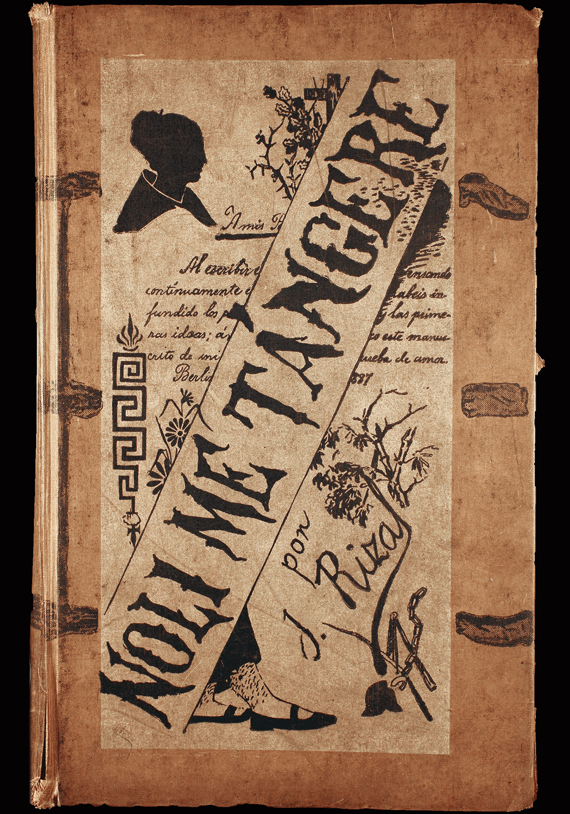

Original book cover of Noli Me Tangere, first published in 1887

Historical photograph depicting life during the Spanish colonial period
Map of the Philippines during the Spanish colonial era
Artist's illustration of Crisóstomo Ibarra, the novel's protagonist

Historical site of José Rizal's execution at Bagumbayan (now Rizal Park)